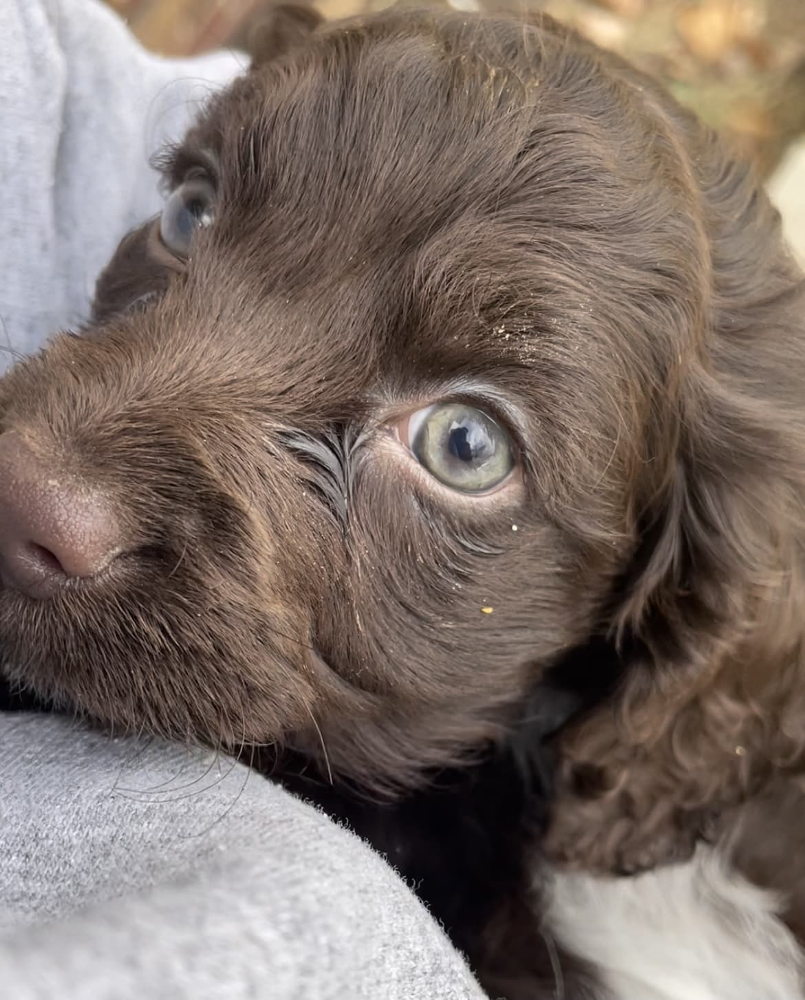
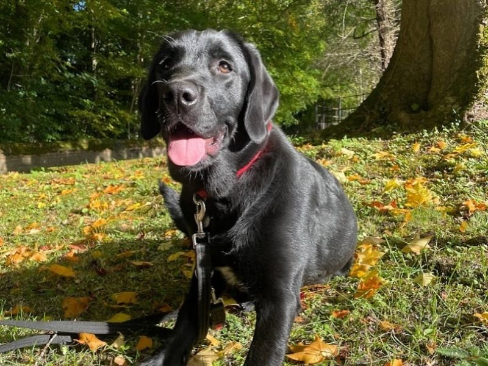
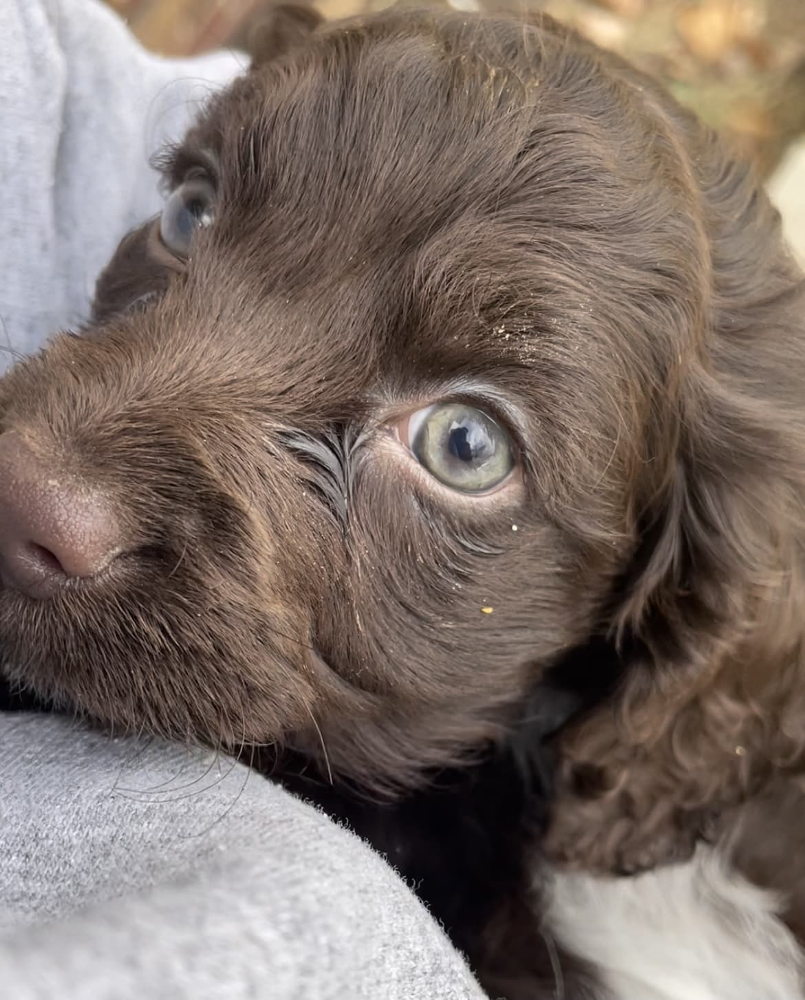
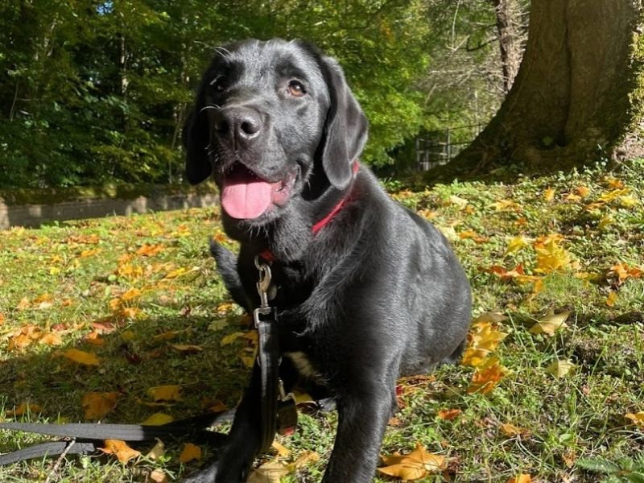
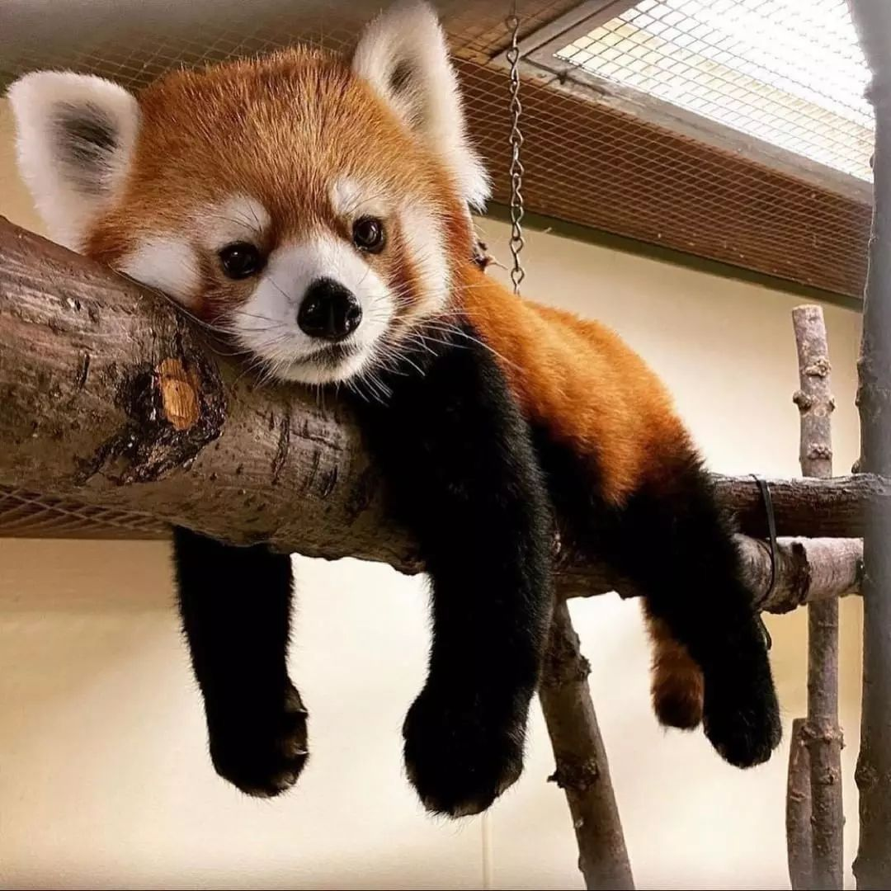
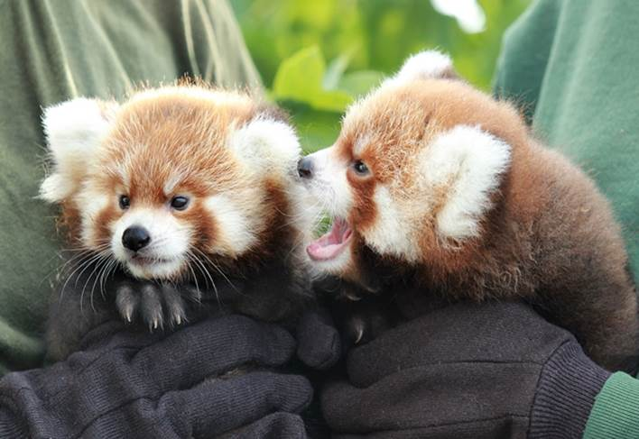
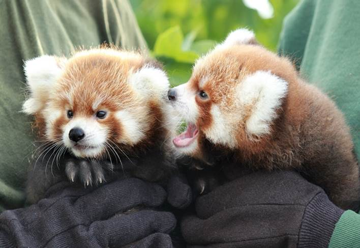

Pets:
Juno

Species: Dog
Breed: Not sure

Juno, the dog, embodies the spirit of adventure and loyalty, capturing the hearts of all who meet her. With her keen intelligence and boundless energy, she's always ready to embark on new adventures, whether it's hiking through rugged trails or strolling through the city's bustling streets. Juno's expressive eyes and wagging tail communicate a deep emotional intelligence, allowing her to form strong bonds with those around her. Despite her playful antics, she exhibits an innate sense of protectiveness, making her not just a pet, but a cherished member of the family. Her unique blend of courage, curiosity, and companionship makes Juno a truly remarkable dog.
Similar Breed Gallery
 




BaoCai

Species: Dog
Breed: Border Collie

The Border Collie is renowned for its intelligence, agility, and unwavering dedication, standing out as one of the most capable herding breeds in the world. Originating from the Anglo-Scottish border region, these dogs possess an extraordinary ability to control and herd livestock, particularly sheep, with minimal guidance. Their keen intellect not only makes them highly trainable but also ensures they excel in various canine sports and activities, including agility competitions and obedience trials. Beyond their work ethic, Border Collies display a deep bond with their human companions, showcasing a blend of loyalty, sensitivity, and a desire for mental stimulation. This breed thrives in an active environment where they can channel their energy and sharp minds into constructive tasks, making them an ideal companion for those who can match their dynamic spirit and need for engagement.
Similar Breed Gallery
Red Panda

Species: Bear(scientifically known as Ailurus fulgens)
Breed: Red Panda
It is not pets but it's one of cuttiest species in the world!
Photo Gallery
 
